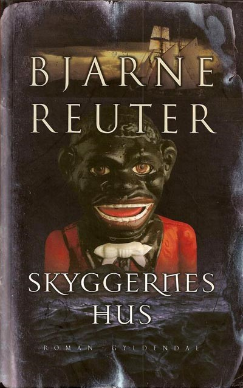

GP All-stars
GP All-stars
Lejrtur til spøgelsesby
★★★★★☆
Bjarne Reuter har altid fanget danskernes opmærksomhed, også selvom det er med gammel inspiration. Skyggernes Hus som stadig hitter blandt voksne og unge, er en fantastisk bog, som du burde læse.

Forsiden af Skyggernes Hus
Marcus.r.olsen@outlook.dk
Mange har sikkert læst 7.A, som er en kendt bog skrevet af Bjarne Reuter. Men Bjarne fandt gammel inspiration frem, og kom ud med ”Skyggernes Hus”. Den er skrevet ud fra det samme plot som 7.A, men har en anden handling, og bogen er stadig aktuel, da den både læses i folkeskolerne og i hjemmene, og får gode anmeldelser.
I Skyggernes Hus hører vi om en klasse fra Mozartskolen. Det er en skole for unge musiktalenter. Ifølge inspektøren er dette skolens mønsterklasse. Da klasselæreren Eva kommer tilbage fra sygeorlov, skal klassen på lejrtur. Samtidig kommer en ny lærer. Nemlig Lars. Han skal også med på turen. Lidt før klassen kommer, tager Eva ud for at tjekke huset som hedder Pemba. Det er stort og gammelt. Det er lige noget for børnene. Men da hun næsten er færdig med at tjekke det ser hun noget. En gammel kone forskrækker Eva. Det er udlejeren. De har en fin samtale indtil Eva hørte noget hun ikke havde lyst til. Der ligger en død mand i kælderen.
Da klassen synes de at elske det. Men som tiden går bliver det mærkeligere og mærkeligere. For som var det ikke nok med et lig i kælderen, finder Eva en gul seddel med passagerer ombord på et skib, og de køn og personligheder passer præcis med klassen. Foruden det har børnene også en hemmelighed, som kun de kender til, og den rækker dybere end de tror. For den gør så nutid og datid møder hinanden og ændrer både børnenes og lærernes skæbne.
Bogen er rigtig godt skrevet. Bjarne Reuter har (som altid) et godt sprogbrug, og han beskriver ting godt. Han skriver det så man forstår sammenhængen, men samtidig lader han os skabe billeder i hovedet og lader os løse nogle af mysterierne selv. Han efterlader én helt ude på stolekanten med nakkehårene rejst og kuldegysningerne rystende rundt i hele kroppen. Alligevel sidder man og prøver at løse mysteriet når man er færdig med bogen, for det giver Bjarne Reuter ikke.
Bogen har fortjent et flot 5 ud af 6 stjerner. Det er en helt fantastisk bog, fordi den som forgængeren får én til at sidde i flere timer og tænke over mysterierne og sammenhængen. Når man er færdig med bogen føler læseren bare at man mangler noget. Der mangler svar på de små ting i historien. Det er det der gør at bogen kun får 5 og ikke 6 stjerner.